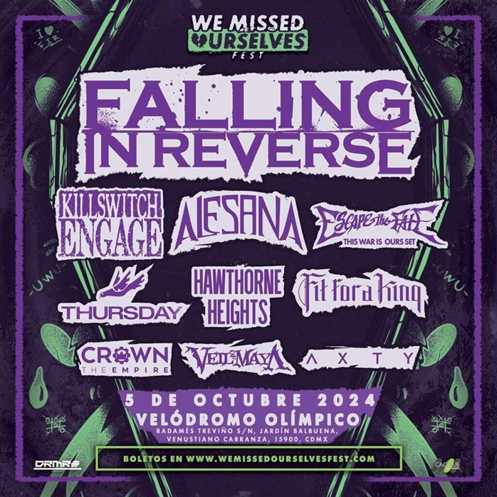
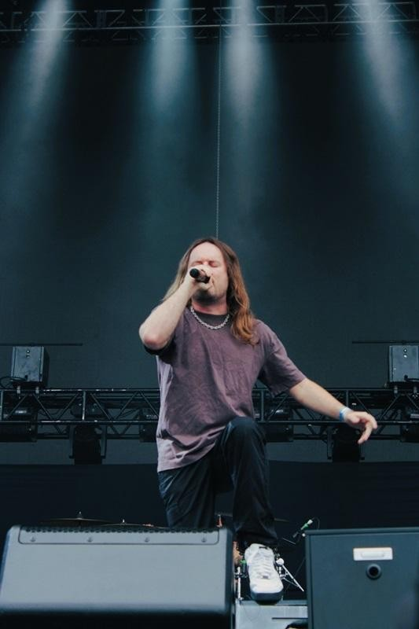
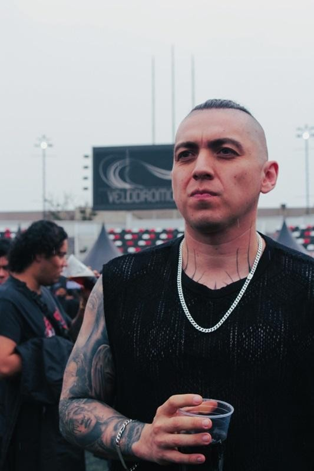
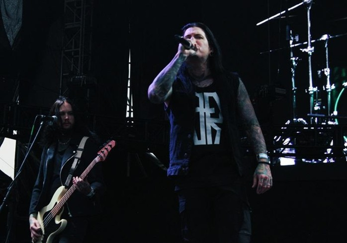

El pasado sábado 5 de octubre, el Velódromo Olímpico de la Ciudad de México se convirtió en el epicentro de la nostalgia y la emoción al albergar el primer Festival Emo. Este evento fue una celebración inolvidable de la estética y los sonidos que marcaron a toda una generación.

El Velódromo ofreció un ambiente único. Los asistentes fueron recibidos con una decoración cuidadosamente diseñada, que incluía luces tenues y banderas de bandas icónicas que evocaban los mejores momentos de la escena de hace dos décadas.
BANDAS QUE HICIERON HISTORIA
- FALLING IN REVERSE
- ALESANA
- THURSDAY
- KILLSWITCH ENGAGE
- FIT FOR A KING

Cada banda nos hizo mover el cuerpo con su enérgica presentación. La lluvia no fue impedimento para que se brincara al ritmo de las guitarras; al contrario, le dio un toque épico a la jornada de gritos y distorsión.

Fans de todas las edades se unieron para compartir su amor por la cultura emo. El festival sirvió como un recordatorio poderoso de cómo la música puede crear un espacio seguro para la conexión emocional y la resistencia.

El primer Festival Emo en el Velódromo Olímpico superó todas las expectativas. La combinación de un espacio emblemático y un cartel impresionante garantizó que este evento quedará en la memoria de todos. Esperamos con ansias la confirmación de una segunda edición.